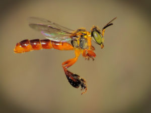

Nesta página estão listadas as Abelhas sem ferrão:Jataí,Uruçu,Mandaçaia e a Oxytrigona tataira
Abelha Jataí

A criação de abelhas Jataí é tipo a nova onda para quem curte cuidar de abelhas. Essas abelhas são duronas e podem se dar bem em cidades. Elas são nativas do Brasil e estão por toda parte, do Sul até o México.
As Jataís têm uma cor amarela maneira e não têm ferrão, então são bem tranquilas. Elas fazem seus ninhos em formato de disco e produzem mel gostoso que tem até propriedades medicinais. Além disso, fazem própolis, cera e pólen de ótima qualidade. Apesar de produzirem menos mel do que as abelhas comuns, o preço é bem mais alto - imagina, um litro desse mel pode custar uma grana.
E o mais legal é que elas guardam o mel e o pólen em potes diferentes, dá pra ver pela transparência dos potes. É tipo um mundo bee diferente!
Abelha Uruçu
A abelha uruçu, ou Melipona scutellaris, é tipo uma abelha raiz do Brasil. A parada mais legal é que ela não tem aquele ferrão nervoso, então é de boa. As uruçus são famosas por fazer um mel top, além de própolis, cera e pólen de qualidade. Elas também mandam muito bem na polinização das plantas. A galera cria elas em meliponários pra pegar esses produtos maneiros. E, tipo, é importante cuidar delas pra manter a natureza na vibe certa e fazer a apicultura sustentável no Brasil.
Abelha Mandaçaia
A abelha mandaçaia, cujo nome científico é Melipona quadrifasciata, é uma espécie de abelha sem ferro encontrada no Brasil. Elas são conhecidas por serem sociais e viverem em colônias, onde ocorrem mel e pólen. Diferentemente das abelhas europeias, a mandaçaia não possui ferro, o que as torna mais amigáveis e menos agressivas. São polinizadoras eficazes de diversas espécies de plantas nativas e desempenham um papel importante na preservação da biodiversidade. Seus ninhos são geralmente encontrados em árvores ou cavidades naturais. As abelhas mandaçaia são valorizadas por sua produção de mel, que é apreciada por seu sabor único e propriedades medicinais.
Abelha Oxytrigona tataira
A abelha Oxytrigona tataira é uma espécie de abelha sem ferro encontrada na América do Sul, incluindo o Brasil. Ela é pequena, social e cria ninhos em cavidades naturais. As tatairas são valorizadas na meliponicultura, uma criação de abelhas sem ferro, devido à produção de mel saboroso. Além disso, desempenham um papel importante na polinização de plantas e na biodiversidade.